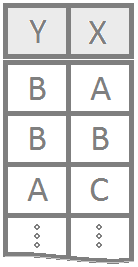
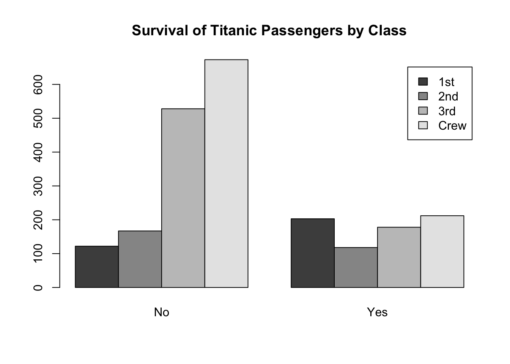
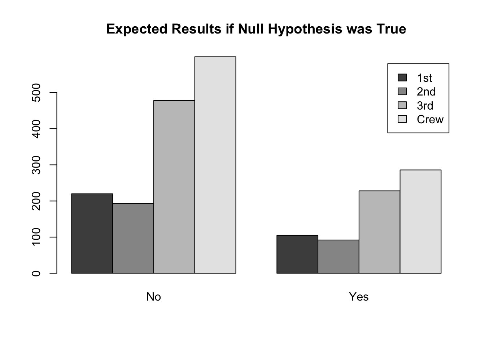
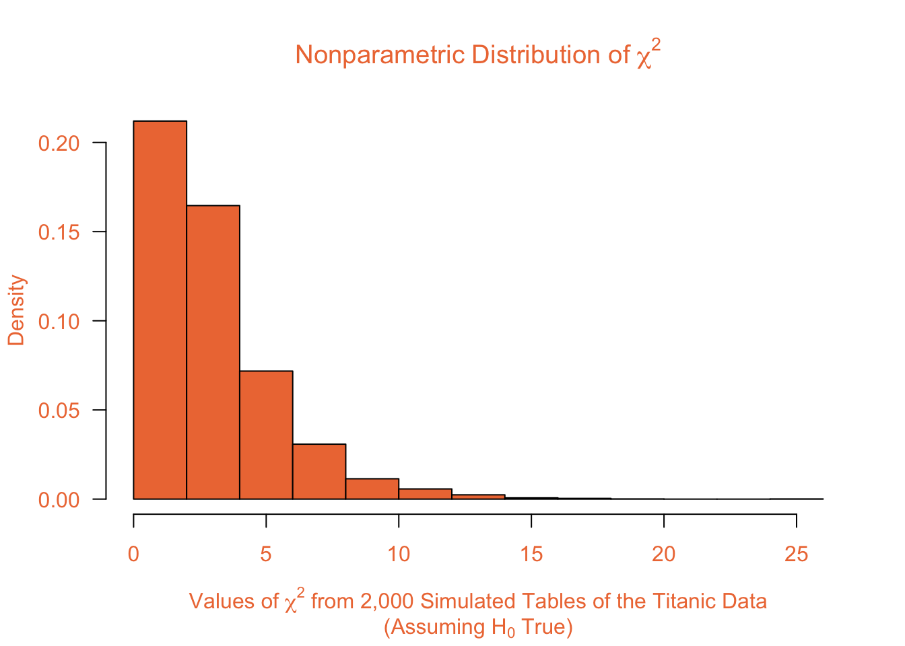

Association testing for two qualitative variables with at least two levels to each variable.
|
 |
OverviewA method of comparing observed counts to the expected counts in a contingency table to decide if two qualitative variables are associated (alternative hypothesis) or are independent, i.e., not associated (null hypothesis). Typically, all expected counts are required to be 5 or greater for the test to be appropriate. However, the test is still appropriate if all expected counts are at least 1 and the average of the expected counts is at least 5. R InstructionsConsole Help Command: To Run the Test
To Make a TableIf you have a data set that you want to turn into a table, use the table command. x The name of your
created table to go in the Click open the example code above for details on how to rename rows and columns in a table. To Make a MatrixIf you have tally counts of your observations, enter them into RStudio using a matrix. x The name of your
created matrix to go in the Or, notice how you could rbind instead with slightly different results… x The name of your
created matrix to go in the Diagnostics yourNamedTestResults This is some name you come up with that will become
the R object that stores the results of your Chi-squated test
yourNamedTestResults This is some name you come up with that will become
the R object that stores the results of your Chi-squared test
ExplanationTo demonstrate the theory behind the Chi-squared Test, consider the following data about the survival of the Titanic passengers as a specific example. The rows of the following contingency table (a table of counts) show the Class of the passenger, while the columns show the Survival of the passenger. Note that each passenger is placed in exactly one Class and one level of Survival. Also, the two factors, Class and Survival, are qualitative variables with at least two levels. Thus, the data meets the basic requirements of the Chi-squared Test.
The HypothesesThe hypotheses of the Chi-squared Test are written as verbal statements. \(H_0\): The row variable and column variable are independent. \(H_a\): The row variable and column variable are associated (not independent). For the Titanic data, these hypotheses would be written as \(H_0\): Class and Survival are independent. \(H_a\): Class and Survival are associated. The ModelRecall that to obtain a \(p\)-value for a hypothesis test two things are required, 1) a test statistic, and 2) the distribution of the test statistic under the null hypothesis. The test statistic for the Chi-squared Test is given by the formula \[ \chi^2 = \sum_{i=1}^m \frac{(O_i - E_i)^2}{E_i} \] where \(O_i\) represents each of the \(m\) observed counts and \(E_i\) represents the \(m\) expected counts. Note that \(m = r\times c\), were \(r\) represents the number of rows in the contingency table and \(c\) represents the number of columns. The expected counts are obtained by the formula \[ E_i = \frac{\text{(row total)(column total)}}{\text{(total total)}} \] The \(\chi^2\) test statistic can be assumed to follow a chi-squared distribution with degrees of freedom \(p = (r-1)\times(c-1)\) as long as the distribution of counts meets either of the following requirements.
OR
Where the \(\chi^2\) statistic Comes FromConsider the following graphic of the Titanic data. The data suggests that Survival of passengers appears to be associated with the Class of the passenger (the alternative hypothesis). This is due to the fact that more 1st class passengers survived than perished but far more 3rd class and Crew members perished than survived. It seems that the chances of survival were much greater for the 1st and 2nd class passengers than the 3rd class and Crew. Thus, survival appears to be associated with class.  If the null hypothesis were true for the Titanic data, then we would expect to see roughly the same percentage of survival across all classes. In other words, if Class and Survival were independent, we would expect to see plots more like the theoretical ones depicted below.  The theoretical plot above depicts the expected counts for each Class and Survival combination. To see where these expected counts come from, note that there are a total of 2,201 passengers recorded for the Titanic data (the sum of all values in the table). Further, there are a total of \(122+203 = 325\) passengers that were 1st class, \(167 + 118 = 285\) passengers in 2nd class, \(528 + 178 = 706\) passengers in 3rd class, and \(673 + 212 = 885\) Crew members. Thus, we have the following percentage of each class of passenger. Note that these percentages were obtained by taking the row totals and dividing them by the “total total”.
Thus, if the null hypothesis is true, we would “expect” these percentages to remain consistent across both categories of Survival. Since there were \(122+167+528+673 = 1490\) passengers that did not survive and \(203+118+178+212 =711\) passengers that survived, we have the following expected counts. The counts under Survived were obtained by multiplying the number of passengers that survived, \(711\) by each of the percentages for the different classes. The counts under Perished were obtained by multiplying the number of passengers that perished, \(1,490\) by each of the percentages for the different classes.
Notice that the above process followed the procedure of dividing the row totals by the total total and then multiplying that percentage to the column totals. Because the order of multiplication and division does not matter, we can phrase this as (row total)(column total) / (total total). These provide the counts we would expect if the null hypothesis were true. When the observed counts differ dramatically from the expected counts, we will reject the null hypothesis. To measure how dramatically the observed counts differ from the expected counts we use the formula \[ \chi^2 = \sum_{i=1}^m \frac{(O_i - E_i)^2}{E_i} \] which is the formula that was stated previously. Notice that \(\chi^2\) will become large when the observed counts differ dramatically from the expected counts, and will be relatively small when the expected counts and observed counts are similar. The \(p\)-value for the \(\chi^2\) statistic can be calculated using a chi-squared distribution with degrees of freedom equal to the product of (the number of rows - 1) and (the number of columns - 1). InterpretationIf the null hypothesis is true, then the interpretation is simple, the two variables are independent. End of story. However, when the null hypothesis is rejected and the alternative is concluded, it becomes interesting to interpret the results because all we know now is that the two variables are somehow associated. One way to interpret the results is to consider the individual values of \[ \frac{(O_i-E_i)^2}{E_i} \] which, when square-rooted are sometimes called the Pearson residuals. \[ \sqrt{\frac{(O_i-E_i)^2}{E_i}} = \frac{(O_i-E_i)}{\sqrt{E_i}} \] The Pearson residuals allow a quick understanding of which observed counts are responsible for the \(\chi^2\) statistic being large. They also show the direction in which the observed counts differ from the expected counts. For the Titanic data the Pearson residuals are given in the following table. Note that the most dramatic depatures in the observed counts (from the expected counts) were for the 1st Class survivors (Pearson residual = 9.566) and the 1st class passengers that perished (Pearson residual = -6.608). These tell us that far more 1st class passengers survived than we would have expected and far fewer perished than we expected. The next interesting scenario is for the Crew members, where more than expected perished and fewer than expected survived. A similar story to a lesser degree is true for the 3rd class passengers. The 2nd class passengers were similar to the 1st class passengers (more survived and less perished than expected) but to a far lesser degree.
|
Examples: movies | StudentRatings | HairEyeColor
|
|
OverviewThe test to perform when all observed counts are at least 1. The hypotheses and interpretation are the same as the Chi-Squared Test of Independence. The distribution of the test statistic is calculated in a nonparametric way. R InstructionsConsole Help Command: chisq.test( ExplanationThe nonparametric chi-squared test is very similar to the chi-squared test. The hypotheses, expected counts, and test statistic are all exactly the same as the chi-squared test. The only difference is that the test statistic is not assumed to follow a parametric chi-squared distribution. The Hypotheses\(H_0\): The row variable and column variable are independent. \(H_a\): The row variable and column variable are associated. The ModelThe test statistic for the Nonparametric Chi-squared Test is the same as the Chi-Squared Test. \[ \chi^2 = \sum_{i=1}^m \frac{(O_i - E_i)^2}{E_i} \] where \(O_i\) represents each of the \(m\) observed counts and \(E_i\) represents the \(m\) expected counts. Note that \(m = r\times c\), were \(r\) represents the number of rows in the contingency table and \(c\) represents the number of columns. The expected counts are also still obtained by the formula \[ E_i = \frac{\text{(row total)(column total)}}{\text{(total total)}} \] However, the \(\chi^2\) test statistic is no longer assumed to follow a chi-squared distribution. Instead, a nonparametric distribution of the \(\chi^2\) test statistic is generated using the following logic using the assumption that the null hypothesis is true. This is how it works. Calculating the P-ValueIf the null hypothesis of a Chi-squared Test is true, then the row variable and the column variable are independent. This means that the probability of a certain level of the column variable occurring is the same in all rows. This is the driving idea behind the method of the Nonparametric Chi-squared Test. Step 1: Randomly reassign values in each row to a different column so that they are somewhat close to the original expected counts, but random. In other words, try to mimic a possible outcome for what would have happened if the row variable and column variable really were independent. For the Titanic data, it would look something like this. Remember, this is not the actual data, it is a randomly made up version of the Titanic data that reflects what we might have observed if Survival was actually independent of Class.
Step 2: Perform a Chi-squared Test of Independence of the rearranged data and record the value of the \(\chi^2\) test statistic. For the made up data above, the Chi-squared Test of Independence gives the test statistic of \[\chi^2 = 3.1953669\] Step 3: Repeat the process thousands of times, always keeping track of the \(\chi^2\) value from each test. For 2,000 made up versions of the Titanic data (each similar to the orange table in Step 1), the 2,000 corresponding test statistics are summarized in the histogram below.  Step 4: Calculate the number of \(\chi^2\) statistics (from the thousands of simulated data sets) that are as extreme or more extreme than the original test statistic observed for the real data. Add 1 to this value (to avoid the possibility of getting a p-value of 0) and then divide by the number of test statistics that were simulated to get the p-value of the Nonparametric Chi-squared Test. For the Titanic data, the original Chi-squared Test statistic was \(190.4011036\). Notice that this statistic is dramatically larger than all of the test statistics that were simulated under the assumption that the null hypothesis was true. (See the histogram in Step 3 to see that no simulated test statistic was above 20, and very few were higher than 15!) Thus, for the Titanic data, no simulated test statistics were as extreme or more extreme than the observed test statistic. We add 1 to this, and divide by 2,000 to get that the p-value = \((0 + 1)/2000 = 0.00005\). This is sufficient evidence to reject the null hypothesis. InterpretationThe interpretation of the Nonparametric Chi-squared Test is exactly the same as the Chi-squared Test. The only difference is in the calculation of the p-value. Fortunately, most software will automatically perform the Nonparametric Chi-squared Test, so all of the above calculations will be performed automatically. |
Examples: Cowlick